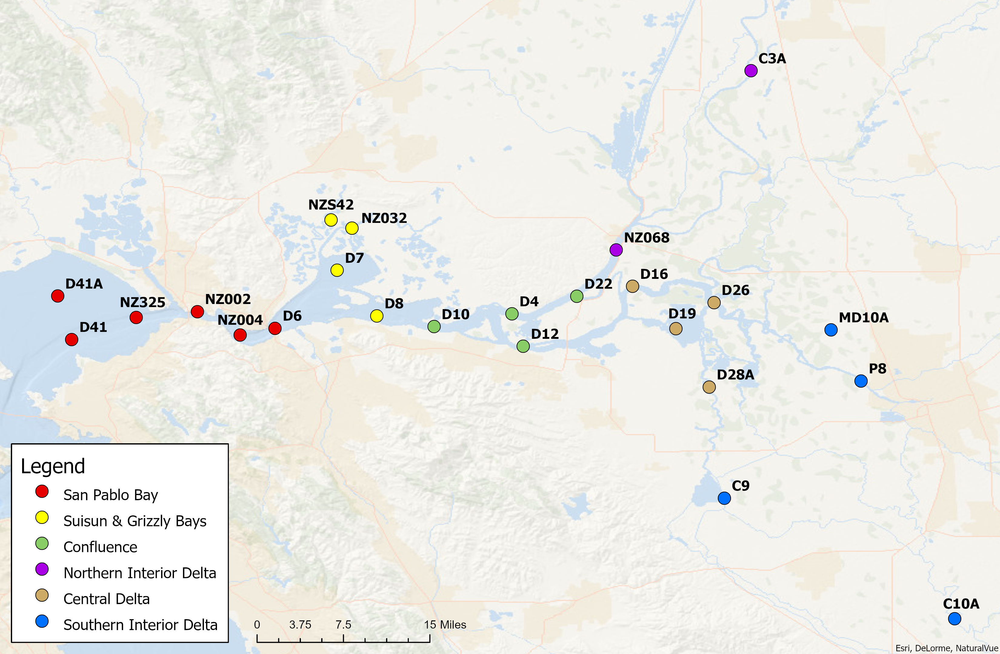

Discrete Water Quality
Background
Water quality is a measure of chemical and physical water conditions relative to the needs for aquatic and human life and is closely linked to the surrounding ecosystem and land use. Aquatic plants require suitable light, nutrients, and water temperatures to survive. Aquatic organisms need dissolved oxygen to breathe, and rely on adequate water temperature, salinity, and pH to survive. Humans need fresh water for recreation, irrigation, as well as to drink. Because of these competing needs, water quality is not easily defined as “good” or “bad,” since it depends on who is using it. However, water quality monitoring is a way for scientists to understand the health of our aquatic ecosystem and to help balance the needs of all who use it.
Typically, water quality is defined by regulated standards set by a regulatory agency, like the State Water Resources Control Board (SWRCB). If water quality does not meet the regulated standards, then it can be defined as poor. Water quality can be monitored continuously or in a discrete manner, both of which are done by the Environmental Monitoring Program. Discrete water quality monitoring is conducted less frequently than continuous and provides a snapshot into the water conditions at a single moment in time, which is helpful for documenting long-term trends. This type of sampling involves collecting a large quantity of water samples on a monthly basis to be analyzed for numerous water quality tests by a chemical laboratory. The Environmental Monitoring Program monitors 24 fixed discrete water quality stations within the San Francisco Estuary. These stations are sampled monthly at high water slack tide and are primarily accessed by the Research Vessel Sentinel, or by vehicle transport for shore-based stations. Sampling at each of these stations consists of collecting a variety of physical parameters (e.g. water temperature and pH) and grab samples for laboratory analysis (e.g. nitrogen and phosphorous).
Analytes
EMP collects data for six different field parameters and 18 different laboratory constituents. The analytes highlighted in this report are:
- Specific Conductance
- Turbidity
- Dissolved Ammonia
- Chlorophyll a
- Dissolved Nitrate+Nitrite
- Total Phosphorus
Sites
To analyze discrete water quality trends, the 24 fixed EMP stations are grouped into six regions of the San Francisco Bay-Delta estuary: San Pablo Bay, Suisun and Grizzly Bay, Confluence, Central Delta, Southern Interior Delta, and Northern Interior Delta. Their locations are displayed below.
